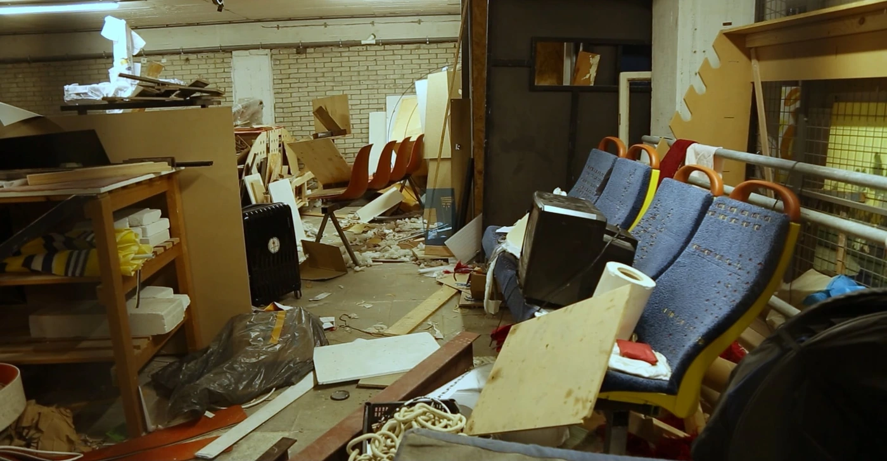
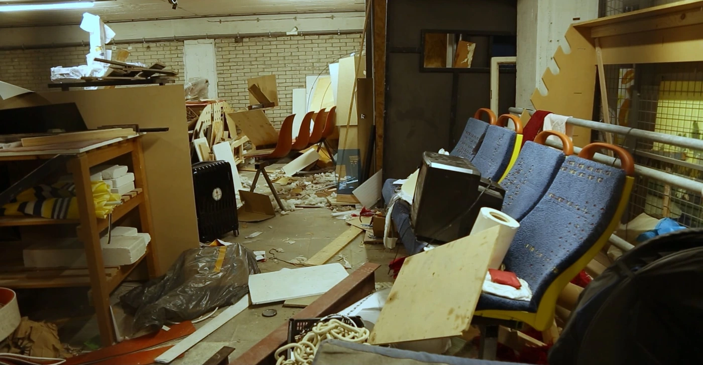

 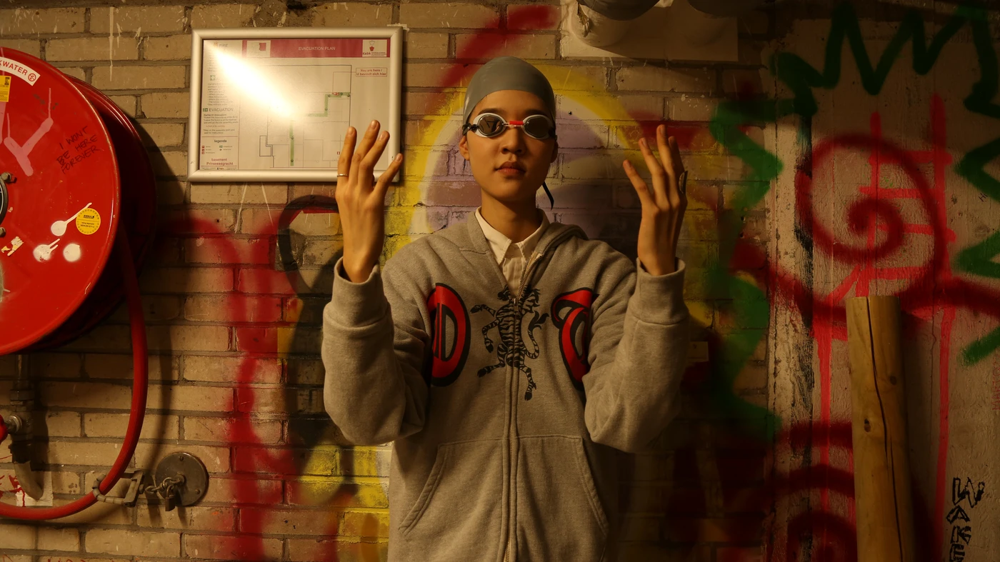
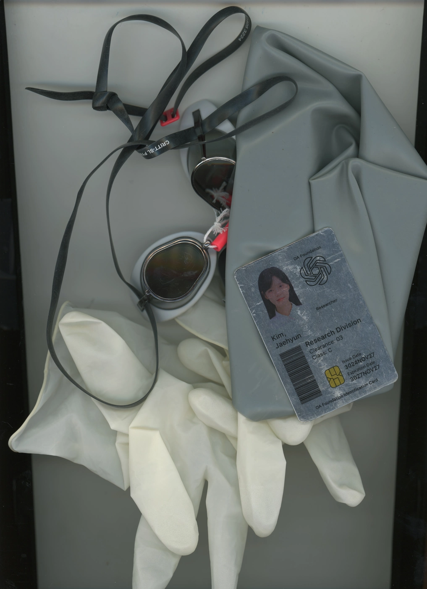
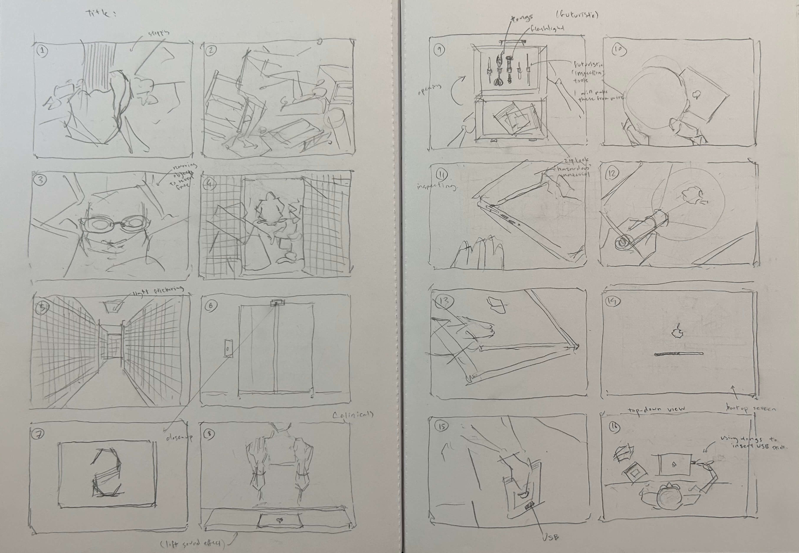
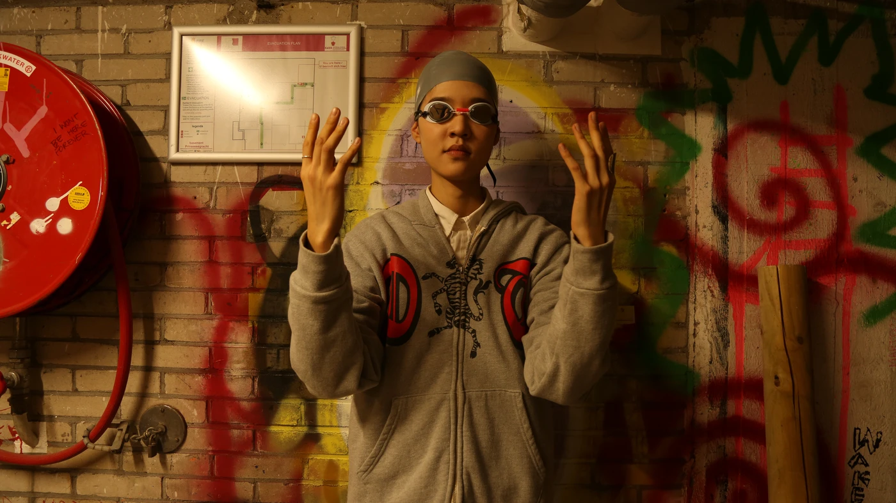
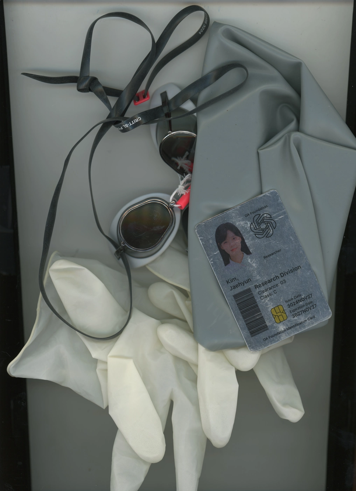
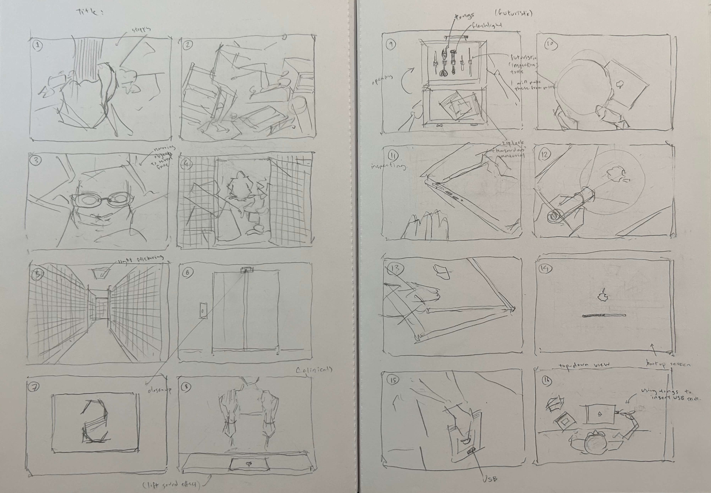
The Relic of the 21st Century
Set a thousand years in the future, this short film follows a researcher who discovers a relic from the 21st century. This short film was featured as part of the Cyberbreach program at the Eye Filmmuseum in Amsterdam, which premiered on February 8th, 2025.
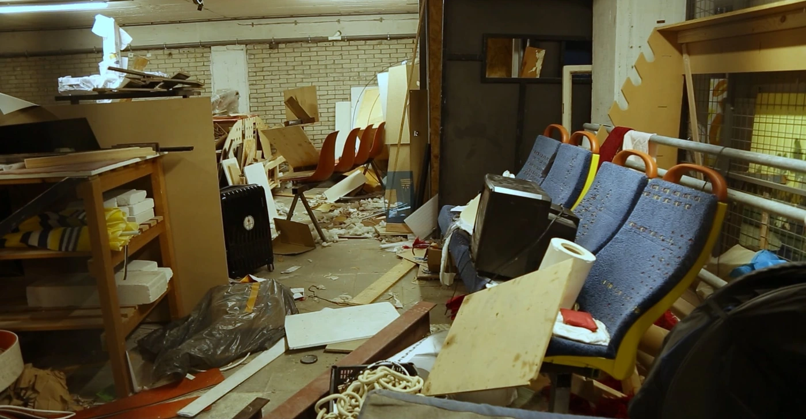
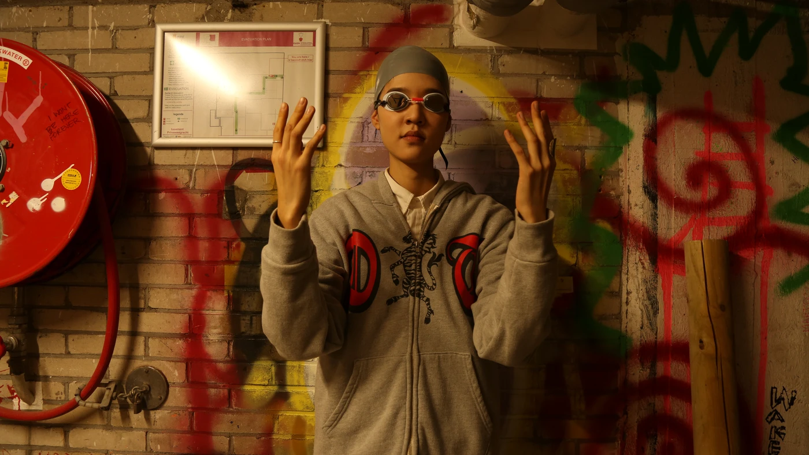
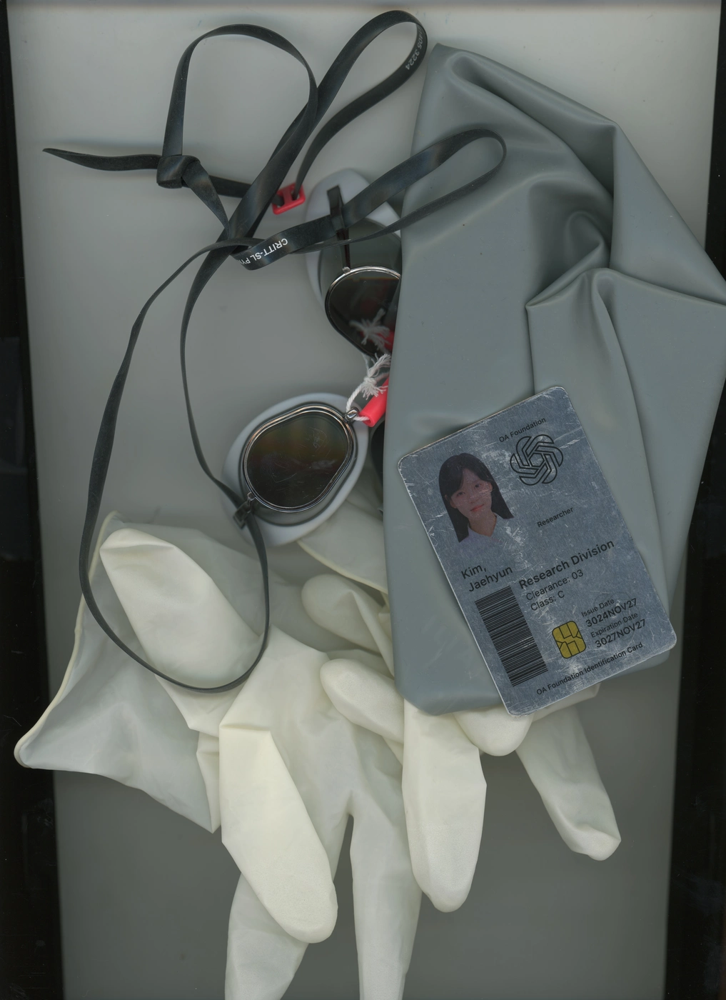
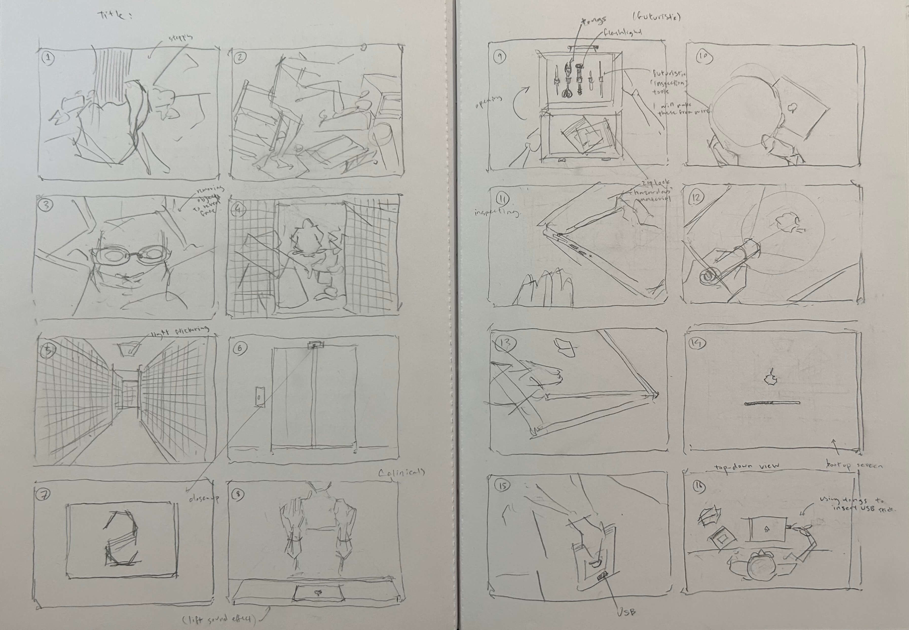